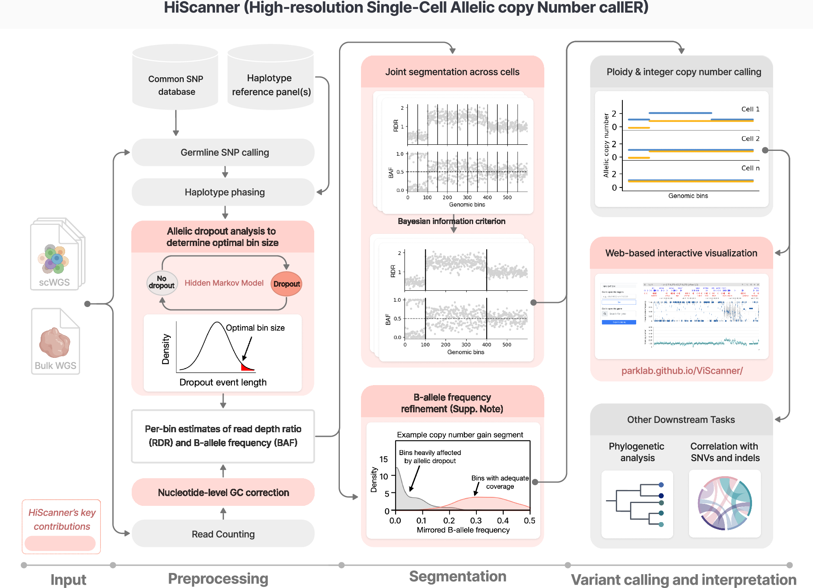

01 / Single-cell DNA
HiScanner
Resolving copy-number changes, one cell at a time.
High-resolution, allele-specific copy-number analysis from single-cell whole-genome sequencing. HiScanner combines read depth and haplotype information to reveal somatic copy-number alterations and cellular heterogeneity.
How it works
Combine read depth and allelic information
Count reads, correct GC effects, call and phase heterozygous variants, and use allelic dropout to guide bin-size selection.
Find shared copy-number boundaries
Joint segmentation across cells combines read-depth ratios and B-allele frequencies to identify genomic changes.
Resolve allelic copy number
Infer ploidy and integer copy numbers, then explore profiles and relationships between cells in ViScanner.

